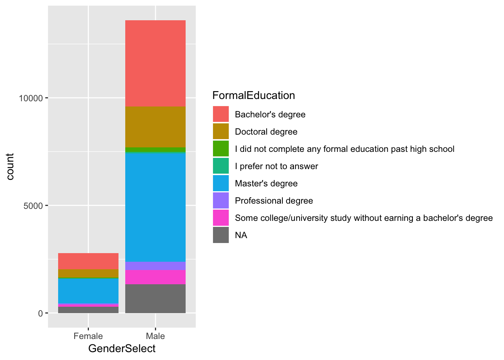

R Notebook 2
This is an R Markdown notebook. I’m using this to demonstrate using R and R Notebooks. The Example is based on the Exploring Kaggle Data Science Survery from DataCamp.
dim(data)## [1] 16716 228data <- as.data.frame(data)
typeof(data)## [1] "list"unique(data$FormalEducation)## [1] "Bachelor's degree"
## [2] "Master's degree"
## [3] "Doctoral degree"
## [4] NA
## [5] "Some college/university study without earning a bachelor's degree"
## [6] "I did not complete any formal education past high school"
## [7] "Professional degree"
## [8] "I prefer not to answer"df <- data %>%
group_by(FormalEducation, GenderSelect) %>%
filter(GenderSelect == "Male" | GenderSelect == "Female") %>%
summarise(count = n())ggplot(df,aes(GenderSelect, count)) + geom_col(aes(fill = FormalEducation))
df <- data %>%
group_by(LanguageRecommendationSelect) %>%
summarise(count = n()) %>%
filter(count > 90)
df <- df[complete.cases(df), ]
ggplot(df,aes(LanguageRecommendationSelect, count)) + geom_col(aes(fill = LanguageRecommendationSelect)) + scale_y_continuous(expand = c(0,0)) +
theme(legend.position="none") +
coord_flip()
df <- data
df <- df[c("LanguageRecommendationSelect","Age", "GenderSelect")]
df <- df[complete.cases(df), ]
df <- df %>%
mutate(Age = floor(Age/10) * 10)
df <- df %>% group_by(Age, LanguageRecommendationSelect) %>%
summarise(count = n()) %>%
filter(LanguageRecommendationSelect == "R" | LanguageRecommendationSelect == "Python")
df %>% ggplot(aes(Age, count, fill = LanguageRecommendationSelect)) + geom_col(position = position_dodge())Here I create a new dataframe and I split the WorkToolsSelect column by “,” and then unnest().
tools <- tools %>%
mutate(worktools = strsplit(WorkToolsSelect, split = ",")) %>%
unnest()
tools %>% select(Respondent ,worktools)## # A tibble: 47,409 x 2
## Respondent worktools
## <dbl> <chr>
## 1 1 Amazon Web services
## 2 1 Oracle Data Mining/ Oracle R Enterprise
## 3 1 Perl
## 4 2 Amazon Machine Learning
## 5 2 Amazon Web services
## 6 2 Cloudera
## 7 2 Hadoop/Hive/Pig
## 8 2 Impala
## 9 2 Java
## 10 2 Mathematica
## # … with 47,399 more rowsCopyright © 2019 Tomas Leriche. All rights reserved.